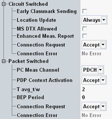

This section defines the CS and PS specific parameters of the GSM cell.

The following parameters configure the cell for CS connections.
Specifies whether early classmark sending is requested. If enabled, the MS has to send classmark information as early as possible after access to the mobile network.
Classmark information can also be sent by the MS upon explicit request, see "Circuit Switched > Classmark3 Request".
Remote command:Defines in which instances the MS performs a location update and provides registration information (e.g. the IMSI) so that the R&S CMW can enter the "Synchronized" connection state.
See also "Connection States".
- Always: location update each time the mobile station is switched on.
- Auto: location update only if the mobile detects that it is no longer registered, e.g. because the SIM card or the network IDs of the R&S CMW (e.g. the LAC) are changed. In "Auto" mode, it is possible to initiate a connection from the "CS On" state using the default IMSI. This mode can be faster than the ordinary connection scheme, because it is possible to determine the time when the mobile is synchronized to the cell signal.
Specifies whether the mobile station can activate the operating mode discontinuous transmission (DTX ).
In discontinuous transmission mode, the voice activity detection of the mobile station analyzes the language elements and the time intervals in-between to decide whether a transmission is required. As a result of this analysis, only useful information is transferred; if nothing is spoken, the mobile station does not transmit anything. DTX mode reduces radio interference and power consumption of the mobile stations.
Note that the DTX mode is disabled by default to ensure that TX measurements can be performed at maximum speed.
Remote command:Enables or disables the MS enhanced measurement reports of the mean BEP, CV BEP and the number of received blocks. Results are displayed in the main view, see "Enhanced Measurements (CS)".
Remote command:The following parameters configure the cell for PS connections.
Channel type (BCCH or PDCH) that the mobile uses to determine the received signal strength and quality. The parameter corresponds to the GPRS power control parameter PC_MEAS_CHAN in the system information 13 "Rest Octets" (3GPP TS 44.018) and packet system information 13 (3GPP TS 44.060).
Option R&S CMW-KS210 is required.
Remote command:Defines whether the R&S CMW accepts or rejects an ACTIVATE PDP CONTEXT REQUEST from the MS (see 3GPP TS 24.008). If enabled, it is possible to establish a circuit switched connection and measure while the R&S CMW remains in the PS attached state.
Remote command:Specifies the signal level filter period for power control in packet transfer mode (TAVG_T) and packet idle mode (TAVG_W) as defined in 3GPP TS 45.008. With an entered value k, the filter period is 2k/2/6 multiframes. This parameter defines the update rate of the mobile's PS measurement reports (the larger k, the slower the measurement reports are updated).
Option R&S CMW-KS210 is required.
Remote command:Configures the BEP_PERIOD specified in 3GPP TS 45.008, section 10.2.3.2.1.
The BEP period is a filter constant for EGPRS channel quality measurements (measurement reports) that the MS uses for the calculation of the mean BEP and the CV BEP values. BEP_PERIOD is broadcast in the system information.
Option R&S CMW-KS210 is required.
Remote command:Specifies the answer of the R&S CMW to the mobile originating connection request.
If "Ignore" is selected, specify the <AcceptAfter> parameter for the further handling.
Remote command:Returns error information related to the current connection.
Remote command: